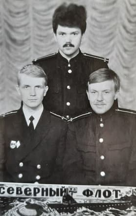

Мои старинные друзья-однокашники предъявляют претензии: что это ты бумагу пачкаешь, а мы тоже хотим.
Чувствую себя не вправе им отказать.
На этой фотографии они на военной переподготовке. Один из них (правый) решил руку попробовать. Он пскович, а потому, считай местный. Его заметки привожу.
Фотка давняя, времен, когда на голове были такие скирды, как у центрального.
ЖИВОТ И ЖИЗНЬ
Город наш, надо сказать, пухнет во все стороны, как дрожжевое тесто, вылезая за собственные границы. Вот и Колян, знатный экскаваторщик-бульдозерист, человек железной хватки и мозолистого ума, умудрился купить квартиру в новеньком районе. Дома городские, красивые, шестнадцатиэтажные, а по документам — глухая Ленинградская область. Формализм, чёрт бы его драл.
И вот в один непрекрасный день Коляну плохеет. Да так, что белый свет становится не мил. Двигаться не может, в глазах темно, а из доступных опций организма — только выворачиваться наизнанку прямо на ковёр. Любой другой лёг бы помирать, но Колян — инженер своей машины, у него мозг работает чётко. Включается тактическое мышление. Если вызывать скорую в этот их аппендикс, приедет областная. И повезёт куда? Правильно, в Токсово. А Токсово для Коляна — это не здравница, это святое место, где они три года назад у Жорика на даче глушили тёплый портвейн из алюминиевой плошки под заветренную кильку. Умирать там, где было так хорошо, Колян решительно отказывается. Романтика романтикой, а медицина в городе надёжнее. Так ему казалось.
Колян собирает волю в кулак, зажимает пузо, выползает на улицу, грузится в автобус и героически преодолевает эти триста метров до официальной городской черты. Вываливается на лавочку у первой же питерской остановки. Всё. Рубеж взят. Вызывайте карету. Привезли. В приёмном покое сидят эскулапы. Лица заспанные, в глазах — вселенская тоска по недопитому кофе.
— На что жалуемся?
— Живот, — хрипит Колян, — подыхаю.
Помяли ему пузо ленивыми пальцами, потыкали.
— Симулянт, — выносят вердикт.
Праздники скоро, работать неохота? Вот тебе рецепт на но-шпу, вот больничный, иди отсюда, не отвлекай занятых людей от спасения человечества.
Как Колян добирался обратно до своей области — история умалчивает. В тумане шёл, по приборам. А на следующий день внутри будто чугунный утюг раскалился. Он опять к ним. Снова ковыляние через границу регионов, снова приёмный покой.
— Опять ты? — хмурятся светила науки.
Мы же сказали: спазмы.
Помяли, продлили бумажку и вежливо выставили пинком под зад.
На третий день — та же комедия. Колян уже хрипит, у него, между прочим, ноги отниматься начали, нервные окончания в брюшине просто обуглились от боли. А врачи злятся:
— Мужчина, не мешайте работать! У нас тут плановые, у нас отчёты! Изыди!
На четвёртый день Колян уже не пришёл — его принесли. Лежит на кушетке, зелёный, как майская трава, дышит через раз. Врачи собрались консилиумом, смотрят на его пузо, как папуасы на упавший спутник. Загадка природы. И тут одного, видимо, самого молодого и ещё не до конца выгоревшего, осеняет гениальная, просто нобелевского масштаба мысль:
— А давайте ему... УЗИ сделаем?
— О-о-о! — закивали остальные. — А давай!
Повезли. Узист поводил датчиком минуту, а потом как выскочит из кабинета с квадратными глазами:
— Парень! Да у тебя там все органы местами поменялись! Сердце справа, печень слева, кишки узлом! Никогда такого хаоса не видел! Анатомический феномен!
Колян лежит и думает: «Дурак ты, доктор, это меня просто от боли так перекосило, что внутренности в кучу съехались».
Консилиум продолжается. Снова смотрят на живот. Феномен же!
— А давайте пригласим хирурга?
Приходит хирург. Дядька тёртый, циничный. Подходит к Коляну, начинает ладонью по пузу водить — легонько так, скользя, будто ласкает. Колян даже расслабился на секунду. И тут хирург, не прерывая этого нежного движения, резко, с размаху вонзает указательный палец куда-то в район правого подреберья.
Издав вопль растерзанного павиана, Колян взмывает над кушеткой практически до потолка, преодолевая законы гравитации и перитонита.
Хирург вытирает руки:
— Так. Всё ясно. Никакой это не феномен. Срочно в операционную!
И завертелась машина. Пять часов Коляна пичкали растворами — стабилизировали, потому что резать сразу было нельзя, развалился бы на части. Потом шесть часов сама операция. Диагноз — перитонит. И не просто перитонит, а застарелый, семидневный! Медицинские учебники в этот момент тихо рыдали в углу, потому что с таким диагнозом больше двух суток не живут даже самые здоровые бульдозеристы. А Колян жил. Чисто на инженерном упрямстве и нежелании помирать в Токсово.
После операции Коляна зашивать не стали. Нельзя. Там внутри был такой филиал ада, что если закрыть — всё загниёт к чёртовой матери. Так и лежал неделю с разверзнутым организмом, прикрытый марлечкой, пока внутри всё вымывали. Самое смешное — за эту неделю к нему в палату не зашёл ни один из тех трёх врачей, что его футболили. Попрятались, как мыши. Были абсолютно уверены, что пациент выдаст дуба, и начнётся прокурорская проверка. Кому охота под статью?
Но Колян выжил. Назло статистике и Минздраву. Выписали его домой, выдали тампоны, лекарства: «Давай, парень, сам там себе промывай, ты же механик, разберёшься». Он и разбирался.
Колян переводит дух, затягивается сигаретой и лёгким движением руки задирает футболку.
— Вот, смотри.
На животе, от самого солнечного сплетения и по дуге вниз к пупку, красуется жуткий, багровый, кривой шрам. Будто Коляна полоснули ржавым, тупым серпом, а потом наживую заштопали толстой суровой дратвой, которой сапожники подошвы пришивают. Косо, криво, зато надёжно.
— Вот это я понимаю, врачи! — Колян искренне, раскатисто хохочет, и шрам на его пузе зловеще подмигивает.
— Молодцы ребята, профессионалы! Вот как я, например, инженер по технике, сразу вижу — ручная работа! Штучный, твою мать, экземпляр!
Флотская байка — субстанция особая. Она, как хорошая морская вода, держится на трех китах: соли, чистом спирте и абсолютной, доведенной до абсурда наглости. А уж на радиотехническом факультете ЛВИМУ имени адмирала Макарова этой субстанции водилось с избытком.
Главным хранителем и одновременно генератором этих историй был декан РТФ — Неволен Тихон Еремеевич. Для седых профессоров он был Тихон Еремеевич, для министерских чинуш — товарищ Неволен, а для курсантов, разумеется, просто «Тишка». Человек-кремень, выпускник той же самой «Макаровки», знавший изнутри каждый винтик курсантской души и способный перепить, перематюгать и передумать любого нарушителя дисциплины.
Но легендами не рождаются. Легендами становятся, причем обычно по глупости.
## Сюжет первый. Зубы Империи
Шел лохматый год тихоновской курсантской юности.
Занятия по физической подготовке в ЛВИМУ — это вам не ритмическая гимнастика. Это пот, хрип и мозоли толщиной с устав. И вот на одном из таких уроков, когда официальная программа была выполнена, а дурная курсантская энергия требовала выхода, завязался спор. Чисто морской, идиотческий и беспощадный: кто дольше провисит на канате, держась исключительно зубами.
Будущие штурманы и радисты подтягивались, цеплялись клыками за канат, синели, выпучивали глаза и шлепались на маты. Средний результат колебался от позорных пяти до рекордных десяти секунд. Носоглотка горела, челюсти ныли.
Дошла очередь до Тихона.
Тишка подошел к канату с видом адмирала, принимающего парад. Подпрыгнул, уцепился зубами, руки по швам. Время пошло.
* 10 секунд — полет нормальный, аудитория оживилась.
* 20 секунд — публика начинает понимать, что пахнет рекордом. Тихон висит, как прибитый.
* 30 секунд — лицо будущего декана приобретает благородный оттенок спелой сливы, глаза лезут на лоб, но руки упорно прижаты к бёдрам. Это уже был не просто спор, это был триумф воли над физиологией.
На сороковой секунде до самых сообразительных дошло: что-то идет не так. Тихон не просто висел — он качался, как маятник фуко, и издавал утробное мычание. Челюсти свело мертвой судорогой. Организм заклинило намертво. Сдаться он физически не мог — замок замкнулся.
— Шухер! — рявкнул староста. — Тишка кончается!
Народ заметался. Снимать его силой — значит вырвать челюсть с корнем. Два курсанта рванули на камбуз так, будто от этого зависел исход мировой революции. Через минуту они прилетели обратно, размахивая казенной, тяжелой алюминиевой ложкой.
Дальше была хирургия. Один держал качающегося Тихона за ноги, второй фиксировал голову, а третий, матерясь сквозь зубы, забивал черенок ложки между стиснутыми зубами героя, действуя им как ломом. Раздался сухой хруст. Два передних зуба остались на алтаре победы, зато челюсть со скрипом разжалась, и Тихон мешком рухнул на маты.
Он лежал, тяжело дышал, сплевывал кровь вперемешку с эмалью, но взгляд его был горд. Спор-то Тихон выиграл! А зубы... что зубы? Советская стоматология потом все исправила, а авторитет остался железобетонным на всю оставшуюся жизнь.
## Сюжет второй. Сантехник высшего пилотажа
Но не физподготовкой единой жив курсант. Случилось неизбежное: в суровую жизнь будущего полярного радиста вмешался Купидон. Причем выстрелил этот крылатый мерзавец без предупреждения, прямо в набитом ленинградском трамвае.
Рядом с Тихоном стояла девушка. Нет, не так — Девушка Божественной Красоты. Тонкая, звенящая, с фарфоровой кожей и глазами, в которых тонули балтийские флоты. Обычно Тишка, парень фартовый и на язык острый, знакомился с дамами в два счета. Мог заговорить зубы любой комсомолке. А тут — бац! — и ступор. Полный паралич речевого аппарата. Стоит, смотрит на нее, как баран на новые шлюпбалки, и только фуражку в руках мнет.
Трамвай гремел по рельсам, стрелы Амура догорали в сердце, а в голове Тихона — курсанта ЛВИМУ — уже лихорадочно работал мощный аналитический ум. Раз нельзя взять штурмом, возьмем осадой и глубокой разведкой.
Девушка вышла на остановке — Тихон за ней, стараясь слиться с ленинградской архитектурой. Она в подъезд — он за ней на цыпочках. Дождался, пока хлопнет дверь, поднялся, зафиксировал номер квартиры и этаж. Операция «Разведка» завершилась успехом.
Через три дня план созрел. Тихон раздобыл где-то жуткий, засаленный комбинезон, перемазал щеку сажей, взял в руки чугунный разводной ключ и преобразился в сантехника Афоню — грозу прокладок и повелителя фановых труб.
Звонок в дверь. На пороге она — все та же нимфа.
— Здравствуйте, — басит Тихон, стараясь не шепелявить (память о канате еще давала о себе знать). — Профилактический осмотр сантехоборудования. По наряду от ЖЭКа. Жалобы на протечки есть?
Нимфа удивилась, но «мастера» впустила. Тихон с деловым видом залез под раковину, начал крутить какую-то гайку, попутно развивая такую мощную словесную атаку, какой Васильевский остров не слышал со времен основания. Слово за слово, шутка за шуткой, из-под раковины посыпались такие искрометные байки об особенностях отечественного водопровода и дальних странствиях, что девушка сначала улыбнулась, потом рассмеялась, а потом... потом предложила «сантехнику» чаю.
Там, за чаем, обман, конечно, вскрылся — ну какой из курсанта-отличника Афоня? Но крепость уже пала. Девушка оказалась начинающей балериной Мариинского (тогда Кировского) театра. Изящное искусство встретилось с суровым флотским радиотехническим гением.
Кончилось все, как и положено в хороших морских сказках, — шумной курсантской свадьбой, где ложка использовалась уже исключительно по прямому назначению. Жили они долго, счастливо и, поговаривают, Тихон Еремеевич до конца дней сам проверял всю сантехнику в доме. На всякий случай. Чтобы никакой другой «курсант Афоня» не просочился.
Георгий Голдованский